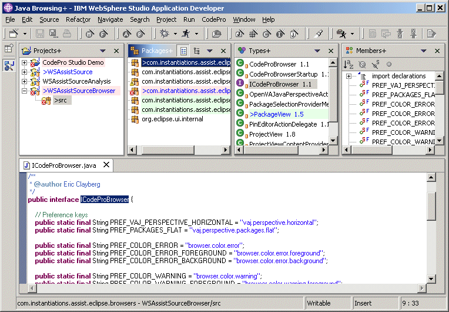
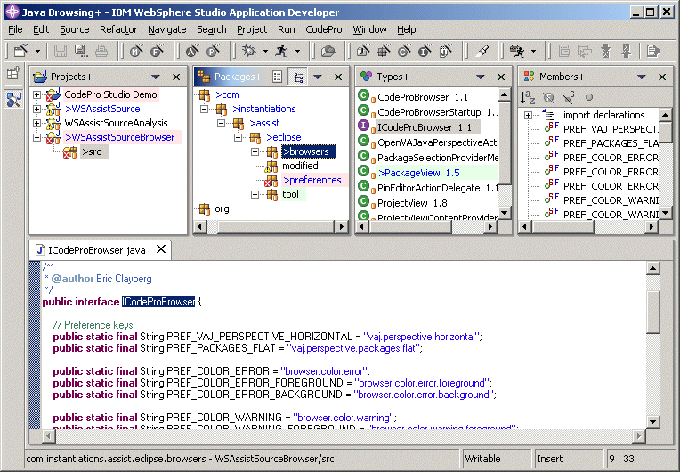

Java Browsing+ PerspectiveThe Java Browsing+ perspective is just like the standard Java Browsing perspective except that it uses the COLOR-enhanced Projects+, Packages+, Types+ and Members+ view rather than the standard Java Browsing views.  By default, modified elements are shown in blue and elements with errors are shown with a light red background. Optionally, elements with warnings can be highlighted with a light yellow background and elements modified since a specific checkpoint time can be highlighted with a light green background color. Options are provided via a preference page to set various foreground and background colors. In addition to color highlighting, the Java Browsing+ perspective also allows the Packages+ view to switch between flat mode and tree mode.  |